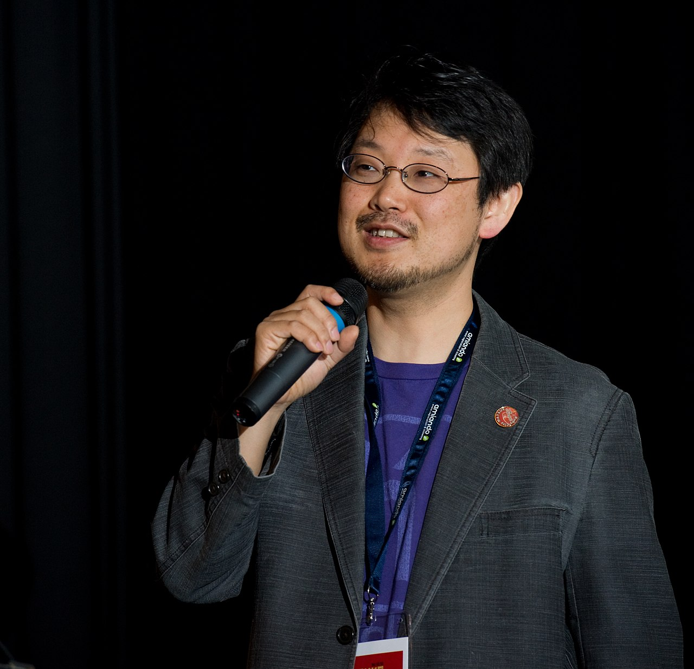
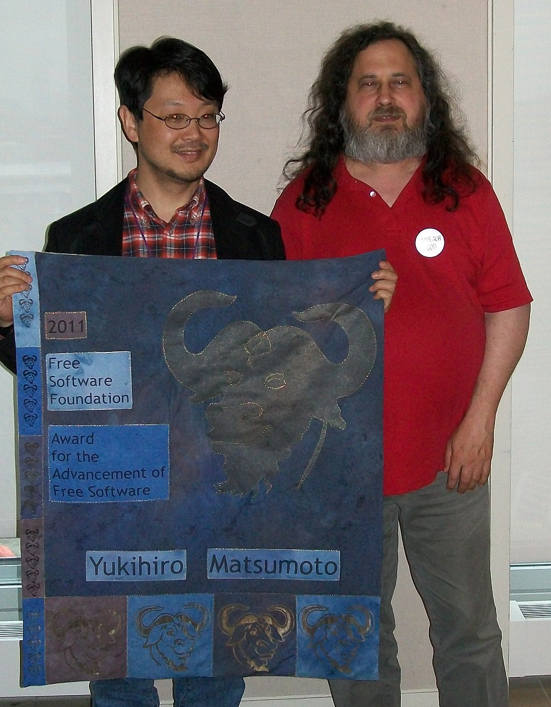

"I did not make Ruby to be easy, I made it to be natural" - YUKIHIRO MATSUMOTO

Japanese computer scientist and software programmer best known as the chief designer of the Ruby programming language and its reference implementation, Matz's Ruby Interpreter (MRI). His demeanor has brought about a motto in the Ruby community: "Matz is nice and so we are nice," commonly abbreviated as MINASWAN.
As of 2011, Matsumoto is the Chief Architect of Ruby at Heroku, an online cloud platform-as-a-service in San Francisco. He is a fellow of Rakuten Institute of Technology, a research and development organisation in Rakuten Inc. He was appointed to the role of technical advisor for VASILY, Inc. starting in June 2014.
He works for the Japanese open source company, netlab.jp. Matsumoto is known as one of the open source evangelists in Japan. He has released several open source products, including cmail, the Emacs-based mail user agent, written entirely in Emacs Lisp. Ruby is his first piece of software that has become known outside Japan.
Matsumoto released the first version of the Ruby programming language on 21 December 1995. He still leads the development of the language's reference implementation, MRI (for Matz's Ruby Interpreter).
In April 2012, Matsumoto open-sourced his work on a new implementation of Ruby called mruby. It is a minimal implementation based on his virtual machine, called ritevm, and is designed to allow software developers to embed Ruby in other programs while keeping memory footprint small and performance optimised.
As of 2011, Matsumoto is the Chief Architect of Ruby at Heroku, an online cloud platform-as-a-service in San Francisco. He is a fellow of Rakuten Institute of Technology, a research and development organisation in Rakuten Inc. He was appointed to the role of technical advisor for VASILY, Inc. starting in June 2014.
He works for the Japanese open source company, netlab.jp. Matsumoto is known as one of the open source evangelists in Japan. He has released several open source products, including cmail, the Emacs-based mail user agent, written entirely in Emacs Lisp. Ruby is his first piece of software that has become known outside Japan.
Matsumoto released the first version of the Ruby programming language on 21 December 1995. He still leads the development of the language's reference implementation, MRI (for Matz's Ruby Interpreter).
In April 2012, Matsumoto open-sourced his work on a new implementation of Ruby called mruby. It is a minimal implementation based on his virtual machine, called ritevm, and is designed to allow software developers to embed Ruby in other programs while keeping memory footprint small and performance optimised.

Normally, both your asses would be dead as fucking fried chicken, but you happen to pull this shit while I'm in a transitional period so I don't wanna kill you, I wanna help you. But I can't give you this case, it don't belong to me. Besides, I've already been through too much shit this morning over this case to hand it over to your dumb ass.
Look, just because I don't be givin' no man a foot massage don't make it right for Marsellus to throw Antwone into a glass muthafuckin'. house, fuckin' up the way he talks. muthafucker do that shit to me, he better paralyze my ass, 'cause I'll kill the muthafucker, know what I'm sayin'?
Look, just because I don't be givin' no man a foot massage don't make it right for Marsellus to throw Antwone into a glass muthafuckin'. house, fuckin' up the way he talks. Motherfucker do that shit to me, he better paralyze my ass, 'cause I'll kill the muthafucker, know what I'm sayin'?
Well, the way they make shows is, they make one show. That show's called a pilot. Then they show that show to the people who make shows, and on the strength of that one show they decide if they're going to make more shows. Some pilots get picked and become television programs. Some don't, become nothing. She starred in one of the ones that became nothing.
The path of the righteous man is beset on all sides by the iniquities of the selfish and the tyranny of evil men. Blessed is he who, in the name of charity and good will, shepherds the weak through the valley of darkness, for he is truly his brother's keeper and the finder of lost children. And I will strike down upon thee with great vengeance and furious anger those who would attempt to poison and destroy My brothers.
Look, just because I don't be givin' no man a foot massage don't make it right for Marsellus to throw Antwone into a glass muthafuckin'. house, fuckin' up the way he talks. muthafucker do that shit to me, he better paralyze my ass, 'cause I'll kill the muthafucker, know what I'm sayin'?
Look, just because I don't be givin' no man a foot massage don't make it right for Marsellus to throw Antwone into a glass muthafuckin'. house, fuckin' up the way he talks. Motherfucker do that shit to me, he better paralyze my ass, 'cause I'll kill the muthafucker, know what I'm sayin'?
Well, the way they make shows is, they make one show. That show's called a pilot. Then they show that show to the people who make shows, and on the strength of that one show they decide if they're going to make more shows. Some pilots get picked and become television programs. Some don't, become nothing. She starred in one of the ones that became nothing.
The path of the righteous man is beset on all sides by the iniquities of the selfish and the tyranny of evil men. Blessed is he who, in the name of charity and good will, shepherds the weak through the valley of darkness, for he is truly his brother's keeper and the finder of lost children. And I will strike down upon thee with great vengeance and furious anger those who would attempt to poison and destroy My brothers.